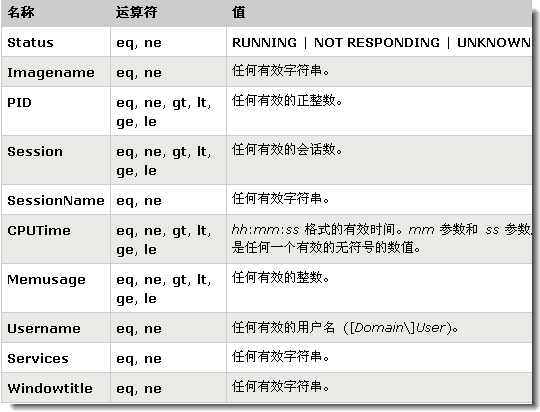

Tasklist命令用来显示运行在本地或远程计算机上的所有进程，带有多个执行参数。
查看引用FMSCommon.dll 的进程
tasklist /s 10.2.72.14 /u administrator /p mes$smt1116 /m fmsco
mmon.dll
使用格式
Tasklist [/S system [/U username [/P [password]]]] [/M [module] | /SVC | /V] [/FI filter] [/FO format] [/NH]
参数含义
/S system 指定连接到的远程系统。
/U [domain\]user 指定使用哪个用户执行这个命令。
/P [password] 为指定的用户指定密码。
/M [module] 列出调用指定的DLL模块的所有进程。如果没有指定模块名，显示每个进程加载的所有模块。
/SVC 显示每个进程中的服务。
/V 显示详细信息。
/FI filter 显示一系列符合筛选器指定的进程。
/FI filter 显示一系列符合筛选器指定的进程。

/FO format 指定输出格式，有效值：TABLE、LIST、CSV。
/NH 指定输出中不显示栏目标题。只对TABLE和CSV格式有效。
应用实例。
1.查看本机进程
在“命令提示符”中输入Tasklist命令即可显示本机的所有进程(图1)。本机的显示结果由5部分组成：图像名(进程名)、PID、会话名、会话#和内存使用。
2.查看远程系统的进程
在命令提示符下输入“Tasklist /s 218.22.123.26 /u jtdd /p 12345678”(不包括引号)即可查看到IP地址为218.22.123.26的远程系统的进程(图2)。其中/s参数后的“218.22.123.26”指要查看的远程系统的IP地址，/u后的“jtdd”指Tasklist命令使用的用户账号，它必须是远程系统上的一个合法账号，/p后的“12345678”指jtdd账号的密码。
注意：使用Tasklist命令查看远程系统的进程时，需要远程机器的RPC服务的支持，否则，该命令不能正常使用。
3.查看系统进程提供的服务
Tasklist命令不但可以查看系统进程，而且还可以查看每个进程提供的服务。如查看本机进程SVCHOST.EXE提供的服务，在命令提示符下输入“Tasklist /svc”命令即可(图3)。你会惊奇地发现，有4个SVCHOST.EXE进程，而总共有二十几项服务使用这个进程。
对于远程系统来说，查看系统服务也很简单，使用“Tasklist /s 218.22.123.26 /u jtdd /p 12345678 /svc”命令，就可以查看IP地址为218.22.123.26的远程系统进程所提供的服务。
4.查看调用DLL模块文件的进程列表
要查看本地系统中哪些进程调用了shell32.dll模块文件，只需在命令提示符下输入“Tasklist /m shell32.dll”即可显示这些进程的列表。
5.使用筛选器查找指定的进程
在命令提示符下输入“TASKLIST /FI "USERNAME ne NT AUTHORITY\SYSTEM" /FI "STATUS eq running”，就可以列出系统中正在运行的非SYSTEM状态的所有进程。其中“/FI”为筛选器参数，“ne”和“eq”为关系运算符“不相等”和“相等”。
小提示
谈到“Tasklist”命令，我们就不得不提到它的孪生兄弟“Taskkill”命令，顾名思义，它是用来关掉进程的。
要关掉本机的notepad.exe进程，有两种方法：
1.先使用Tasklist查找它的PID，假设系统显示本机notepad.exe进程的PID值为1132，然后运行“Taskkill /pid 1132”命令即可。其中“/pid”参数后面是要终止进程的PID值。
2.直接运行“Taskkill /IM notepad.exe”命令，其中“/IM”参数后面为进程的图像名。
NTSD
系统debug级的ntsd，很多
进程Tasklist是杀不了的，但是用ntsd就可以，基本上除了WINDOWS系统自己的管理进程,ntsd都可以杀掉，不过有些rootkit级别的超级木马就无能为力了，不过幸好这类木马还是很少的。
命令格式：ntsd -c q -p pid
命令范例： ntsd -c q -p 1332 （结束explorer.exe
进程）
命令格式：ntsd -c q -pn ***.exe （***.exe 为
进程名,exe不能省）